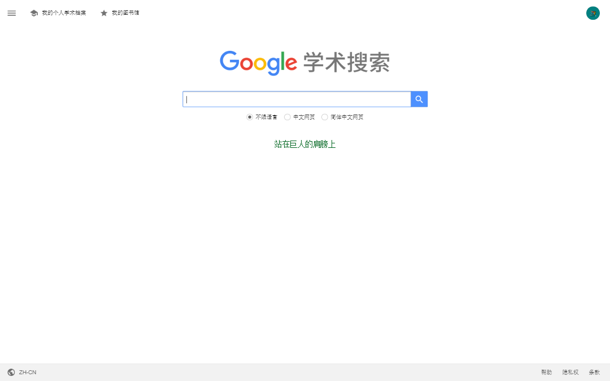
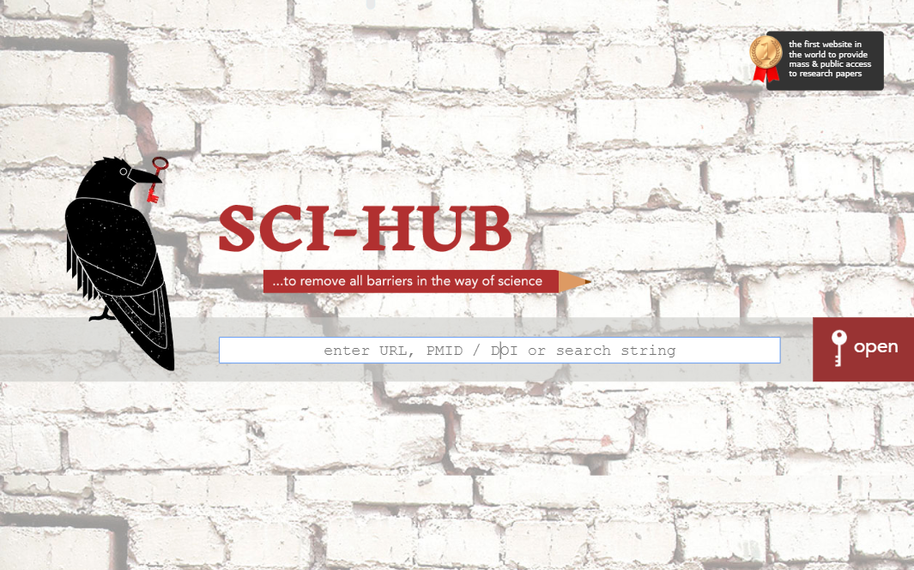
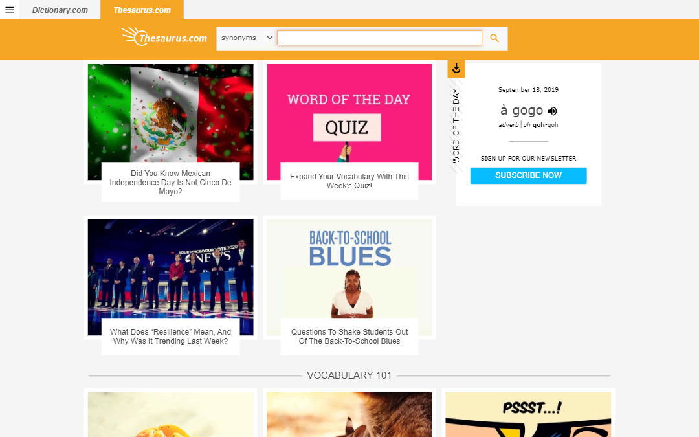
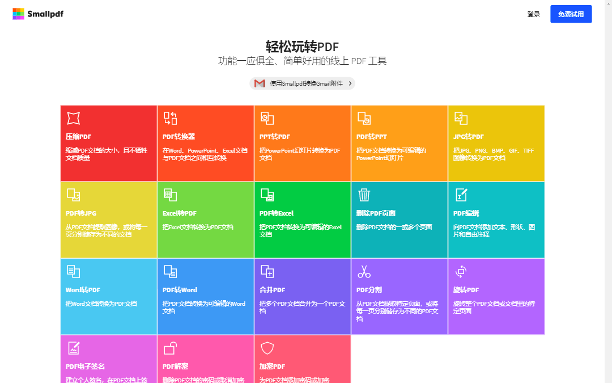

学术文献查找工具
Create At: 2019-09-18在整理chrome收藏夹，顺便写写文章整理一下吧。
1. Semantic Scholar
Semantic Scholar是一个类似谷歌学术的文章搜索引擎，但是使用下来好像可以直接看pdf的文章数量比谷歌学术要多。
2. Google Scholar
这个鼎鼎大名了，必备了吧。
3. Sci-Hub
由于付费墙的存在，很多文献是不能直接下载的，除非学校买了数据库或者自己买了会员。那这时候就可以用sci-hub去输入doi来下载文献了。
sci-hub一直处于被打压状态，目前能用的链接是这个https://sci-hub.tw/，当然你也可以去谷歌一下sci-hub下载器之类的直接去用sci-hub的api解析地址，而非通过web gui。
4. 同义词搜索（英文）
写英文论文最怕重复单词，用dictionary.com家的thesaurus去找同义词替换吧。
5. 在线文档格式互转
金山要收费，这个在线的工具也挺好用，pdf到word等等office系列的格式互转功能都有，甚至包括pdf文件分隔，合并，压缩等等。
